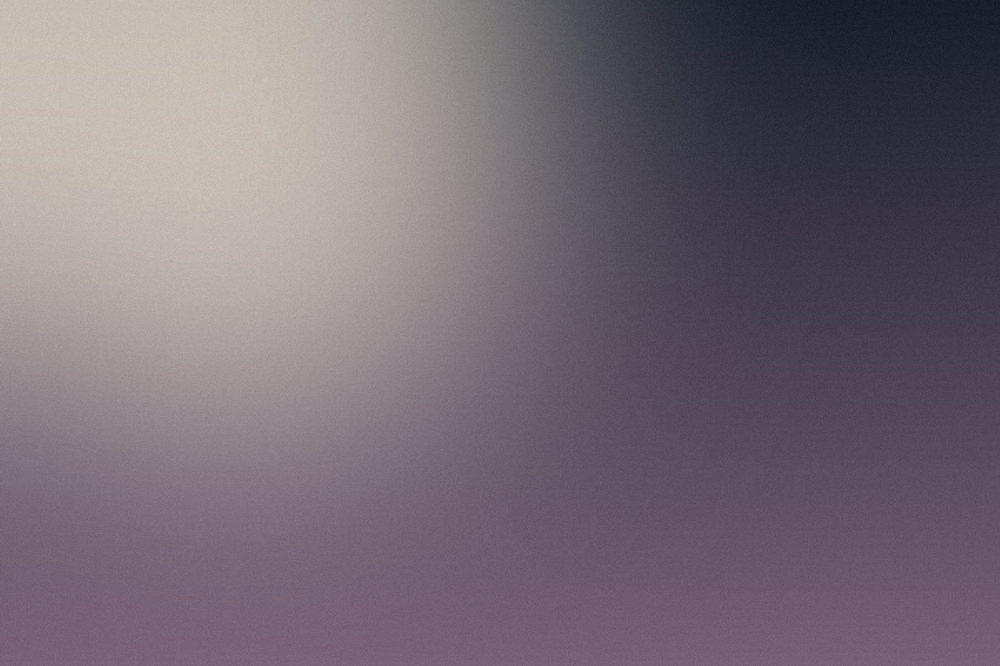

The ink variant should read on paper and white and vanish on ink. The white variant should read on harbour and ink and vanish on white. Anything that does not behave that way is a defect.
These are SVG, so there is no maximum placement size and no upscale problem. If yours are raster, record each native width in DESIGN.md and treat it as a hard ceiling.
From the palette. No value here was sampled off a screenshot.
Real files. Compare the grain and the optical break against anything you could write in CSS. That difference is the whole reason for the no-CSS-gradients rule.

The real self-hosted fonts must load here. If any line below looks like Helvetica, an
@font-face src is pointing at a file that is not there.
Space Grotesk Bold, -4%, 95%
Sora · eyebrow / label
Sora Regular body copy. The quick brown fox jumps over the lazy dog, 0123456789. This should be visibly a different family from the headline: rounder, more geometric, less tightly tracked.
F-06, open. There is no reference/ folder, so nothing above can be
diffed against approved artwork. Add yours and measure. See kit/NEW-BRAND.md step 4.